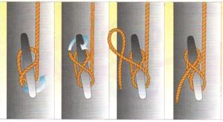
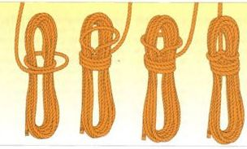

Первый практический контакт с судоходством часто начинается с того, что нужно где‑то отвязать конец. Общий термин для всех видов канатов — такелаж (tauwerk). Существует плетёный и витой канат. Отдельные пряди витого каната называются кардéлями. Начало и конец каната называются ходовыми концами. Более короткие отрезки также называют концами. Тяжёлые канаты называют тросами. На моторных лодках сегодня используются почти исключительно синтетические канаты (полиэстер, полиамид, полипропилен). Они имеют высокую прочность на разрыв, небольшой удельный вес и мало впитывают воду.
Однако у них есть и недостатки: они теряют прочность под воздействием тепла, трения и ультрафиолетового излучения и очень чувствительны к истиранию.
Полиамид (PA) — торговые названия Perlon, Nylon — сочетает очень высокую прочность на разрыв с большой эластичностью. Поэтому он особенно подходит для якорных и буксирных тросов.
Полипропилен (PP) — торговые названия Polyprop, Kostalen PP, Ulstron — очень лёгкий плавающий канат со средней прочностью на разрыв. Поэтому он хорошо подходит для швартовых и буксировочных тросов для водных лыж.
► Разрывная прочность каната на борту должна как минимум в пять раз превышать возможную нагрузку
► Все канаты необходимо регулярно проверять на износ и повреждения.

Закрепление на кнехте
Сначала сделайте оборот вокруг основания кнехта так, чтобы канат не затягивался сам. Затем сделайте крестообразные витки в форме восьмёрки вокруг рогов кнехта. Обычно достаточно двух. Если требуется дополнительная фиксация, завершите узел полуштыком.

Сматывание каната
Поскольку большинство канатов правой свивки, их следует сматывать также по часовой стрелке.
Одинаковые бухты собираются и фиксируются несколькими витками.
Последний виток формируется петлёй сверху и надевается на связку.